Guía de uso
Tu presentación lista
para la cabina
Revisa fuentes, vídeos, imágenes, legibilidad, formato y tiempos de una presentación de PowerPoint o Keynote antes de entregarla en el congreso.

Guía de uso
Revisa fuentes, vídeos, imágenes, legibilidad, formato y tiempos de una presentación de PowerPoint o Keynote antes de entregarla en el congreso.
Índice
Check Lab lee tu presentación y te dice qué puede fallar en el ordenador de la cabina: una fuente que falta, un vídeo que no se reproduce, un texto que no se lee desde la última fila.
En el navegador
niki977.github.io/ultraspeaker-check-lab. Arrastra un archivo .pptx (PowerPoint) o .key (Keynote). Funciona en ordenador, tableta y teléfono.
En PowerPoint
Pestaña Inicio → grupo The Ultraspeaker → Check Lab. El panel revisa la presentación abierta y te lleva a la diapositiva del problema con «Ir a la diapositiva».
Próximamente
El panel de PowerPoint está en pruebas y estará disponible en breve. Mientras tanto usa la versión web: hace las mismas comprobaciones.
| Qué revisa | Ejemplos |
|---|---|
| Fuentes | no incrustadas, solo Windows o solo Mac |
| Vídeo y audio | vinculados en lugar de incrustados, formatos que no se reproducen, 4K |
| Imágenes | baja resolución, archivos pesados, EPS, CMYK, HEIC |
| Legibilidad | contraste con el fondo y sobre fotos, tamaño para la última fila, gráficos para quien confunde rojo y verde |
| Formato y archivo | formato de la pantalla, diapositivas vacías u ocultas, enlaces, peso |
| Tiempos | segundos por diapositiva frente al tiempo asignado |
Privacidad
El archivo se lee solo en tu ordenador y nunca se sube a un servidor. En el dispositivo se quedan el idioma, los ajustes de la ponencia, la lista y tus valoraciones del informe.
Cuatro pestañas arriba. Se empieza por Revisión; Estilo sirve antes de crear las diapositivas, Cabina el día de la ponencia.
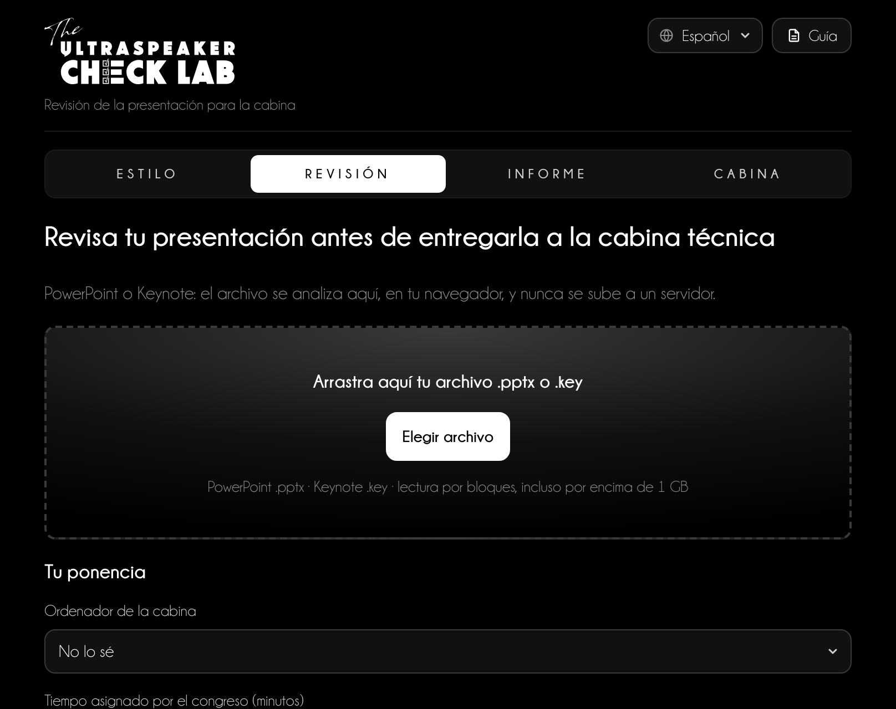
1234Basta un minuto y el archivo de la presentación. Cuantos más datos des sobre la ponencia, más preciso es el informe.
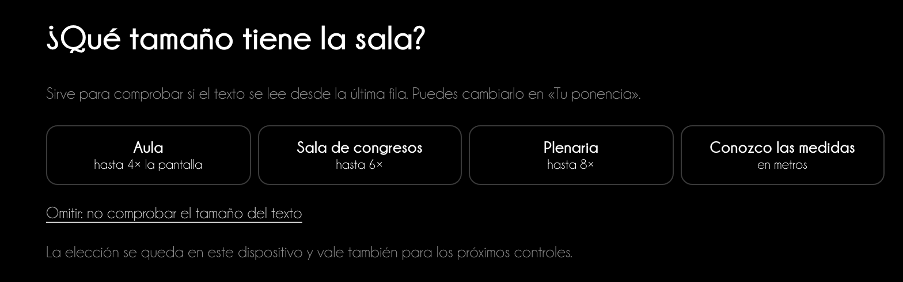
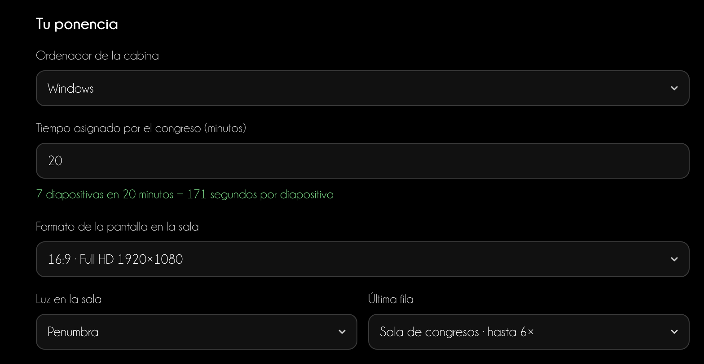
Última fila
Aula, sala de congresos o plenaria: el tamaño mínimo del texto depende de la distancia de la última fila. Si conoces las medidas, elige «Conozco las medidas» e introduce altura de la imagen y distancia en metros.
El informe no pone nota: a menudo un ponente tiene que llegar a compromisos, y eres tú quien decide cuánto pesa cada problema.
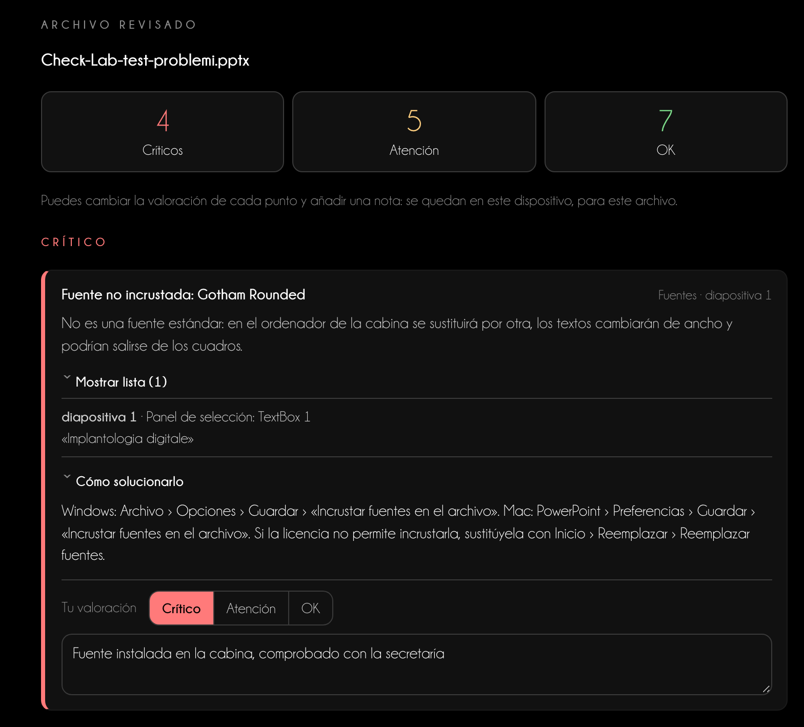
123456Tus valoraciones se quedan en este dispositivo, ligadas al archivo: si corriges la presentación y la revisas de nuevo, las encuentras. Borrar mis valoraciones las borra. Con Exportar PDF o Copiar informe llevas el informe a la secretaría o a tu asistente.
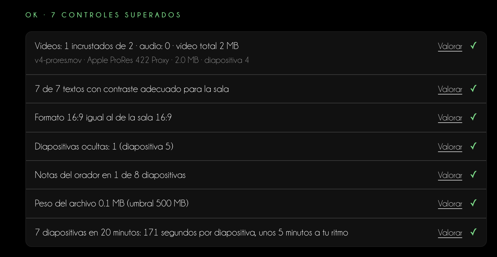
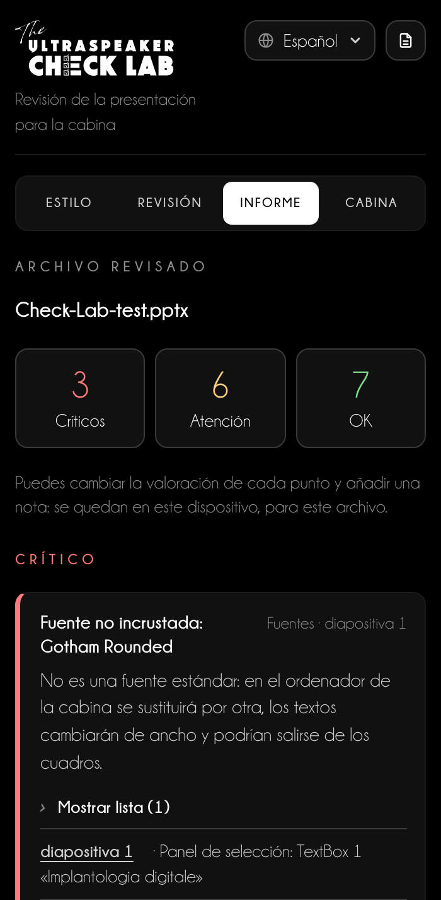
En el panel de PowerPoint cada diapositiva del informe es clicable y te lleva directamente al punto que corregir.
Los avisos más frecuentes y la corrección más rápida. El consejo completo está siempre en «Cómo solucionarlo».
| Aviso | Qué hacer |
|---|---|
| Fuente no incrustada | PowerPoint: Archivo › Opciones › Guardar › «Incrustar fuentes en el archivo». Si la licencia no lo permite, sustituye la fuente. |
| Vídeo vinculado u online | Insértalo desde el ordenador (Insertar › Vídeo › Este dispositivo): el archivo debe estar dentro de la presentación. |
| Vídeo en .mov, ProRes, WMV | Conviértelo a MP4 H.264, por ejemplo con HandBrake, e insértalo de nuevo. |
| Imágenes de baja resolución | Sustitúyelas por el original, al menos del ancho en píxeles indicado. |
| Texto poco legible | Usa el color propuesto; en el panel pulsa «Aplicar». |
| Texto sobre foto | Pon una banda semitransparente detrás del texto o mueve el texto a una zona uniforme. |
| Texto demasiado pequeño | Agrándalo o reparte el contenido en dos diapositivas. |
| Archivo pesado | Formato de imagen › Comprimir imágenes, 220 ppp, eliminar áreas recortadas. |
Antes de crear las diapositivas, elige fondo, color del texto y fuente: ves enseguida si se leerán en la sala.
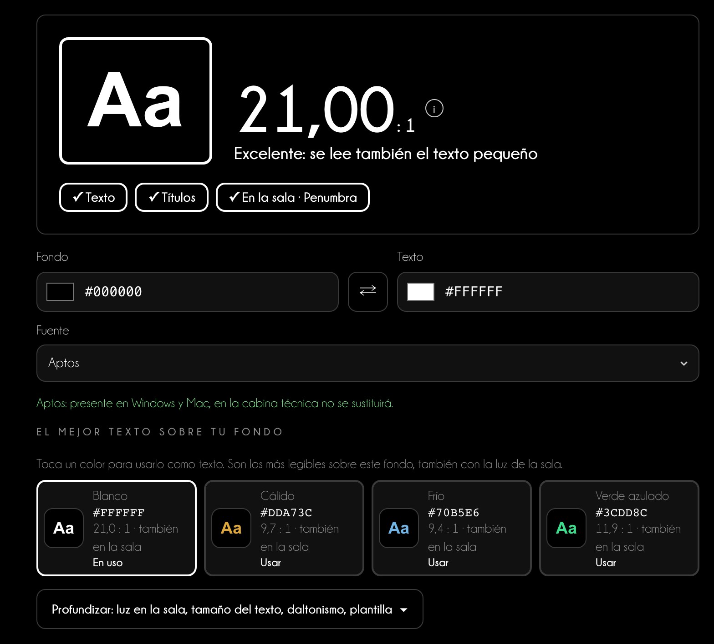
12345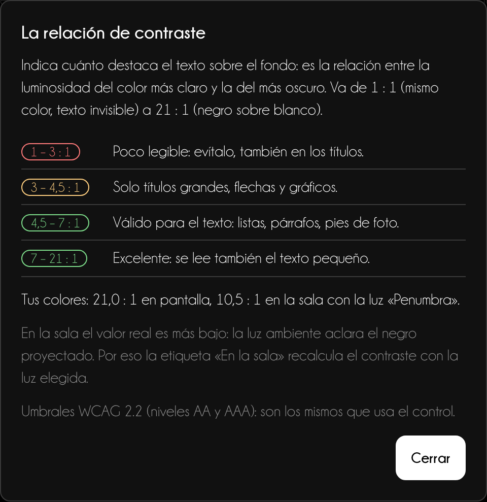
| Relación | Uso |
|---|---|
| por debajo de 3 : 1 | poco legible, evitar |
| desde 3 : 1 | solo títulos grandes, flechas, gráficos |
| desde 4,5 : 1 | texto normal, listas, pies de foto |
| desde 7 : 1 | excelente, también el texto pequeño |
Fuentes descargadas
Antes de usar una fuente de Dafont u otro sitio revisa la licencia: muchas son «solo para uso personal». Para incrustarla en PowerPoint la licencia debe permitirlo.
La pestaña Cabina prepara la entrega: el nombre del archivo, la lista del día y los archivos de prueba que abrir en la sala.
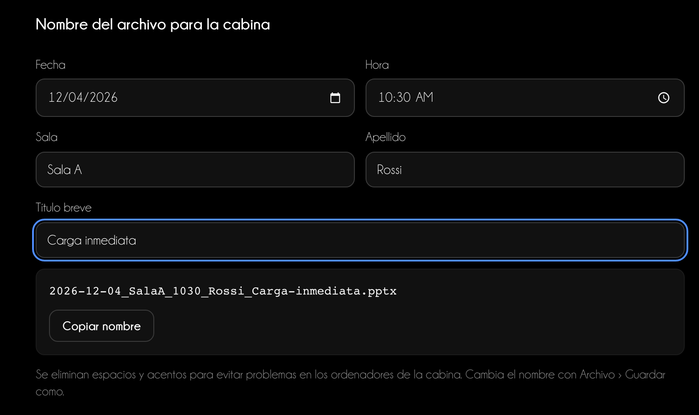
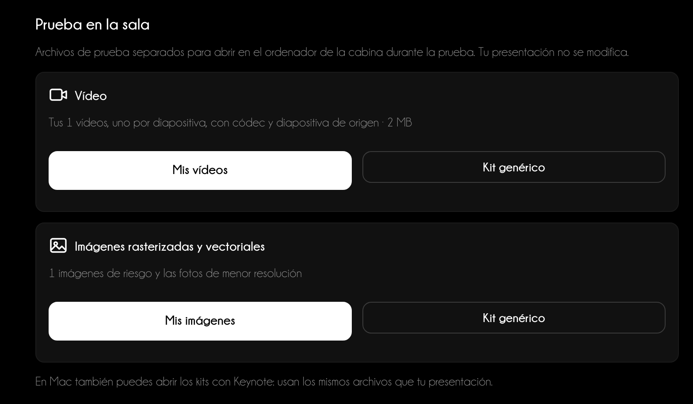
Kit de imágenes
En la diapositiva SVG el título de la imagen debe decir «SVG». Si lees «PNG», ese ordenador no muestra el vectorial y usa la vista previa de reserva.
Check Lab encuentra los problemas del archivo. Estos tres hábitos evitan los de la sala.
Entrégala el día antes
Envía el archivo a la secretaría al menos 24 horas antes, con el nombre en el formato de la cabina, y lleva una memoria USB con la presentación y un PDF de reserva.
Prueba en la sala 30 minutos antes
Abre el kit «Prueba en la sala» en el ordenador de la cabina: en dos minutos sabes si vídeo, audio e imágenes funcionan.
Escribe para la última fila
En una sala de congresos con pantalla 16:9 hacen falta unos 32 pt en PowerPoint. Si un texto no cabe, repártelo en dos diapositivas en lugar de reducirlo.
Soporte
Escribe a info@theultraspeaker.com indicando ordenador, versión de PowerPoint o navegador y lo que aparece en la pantalla. No hace falta enviar la presentación.

Knowledge is not enough.
From expert to Ultraspeaker.
theultraspeaker.com · info@theultraspeaker.com